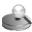

Для этого в дереве конфигурации и управления WEB интерфейса SAMS выберите пункт MySQL. Далее в нижнем фрейме правой панели нажмите кнопку  "Протестировать таблицы баз данных". Будет произведено тестирование таблиц баз данных SAMS, и если есть поврежденные таблицы, предложено попытаться восстановить их. Выберите таблицы для восстановления и нажмите кнопку восстановить.
Внимание! Этот способ не гарантирует восстановление таблиц базы данных! Восстановление баз данных лучше вести средствами MySQL.
Для этого в дереве конфигурации и управления WEB интерфейса SAMS выберите пункт MySQL. Далее в нижнем фрейме правой панели нажмите кнопку "Статистика базы данных".
Для этого в дереве конфигурации и управления WEB интерфейса SAMS выберите пункт MySQL.
Далее в нижнем фрейме правой панели нажмите кнопку "Измененить имя пользователя в базе логов SQUID".
Выберите имя пользователя для замены и период времени, за который необходимо изменить данные.